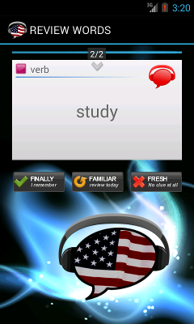

This practice is the only one
which records how well you know the word and it impacts your
learning. This section only describes the Review screen and the
Review activity is described in a different chapter. You need to tap the card to flip it and display the correct translations. You will rate yourself on how well you know the vocabulary. There are only 3
options which you can choose and here is a description on what they
mean:
|
you know the word before you flip the card |
|
you remember only some of the flashcard or you need to
flip the card to
confirm your guess |
|
You want to learn this card more seriously. |
Review
is the only session which changes proficiency of the words and it
affects how long you will be learning each word.
|
FINALLY - Use this answer when you instantly remembered the word
and did not
hesitate too much.
This answer will increase the word proficiency the most, but you will see the word again in a longer interval. You know the word now, but the program will check again in few weeks if you still remember the flashcard. |
|
FAMILIAR - You don't know the card or you only remember it after
you flip it.
It takes time to learn new words and this option
will help you to learn the word at your pace. The program will try to
repeat the word again in few days, so you will learn it faster.
Sometimes I use this option to slow the learning down and when I want
to learn the word thoroughly. I use this when I get closer to mastering
the word (ie. Green proficiency), but I don't feel comfortable
to enable the next level card. |
|
FRESH - You don't remember this word at all.
don't hesitate too much to use this option, there is nothing bad
about this answer and you will focus on learning these words again
today. This answer will reduce your proficiency rating for this card
just a bit and the program will try to show this card again as soon as
possible. This option will help you to focus on learning this word more
seriously.
You can use this option to learn the flashcard better, because this word will be reviewed as soon as possible. |
|
I KNOW THIS WORD -
use it when you
don't want to see this word again
This answer is only available from the menu. It completes all flashcard levels and you will never see the card again. You should use this option only for words with native-like proficiency. don't use it if you learned the word just
recently, because the word will be not repeated.
|
|